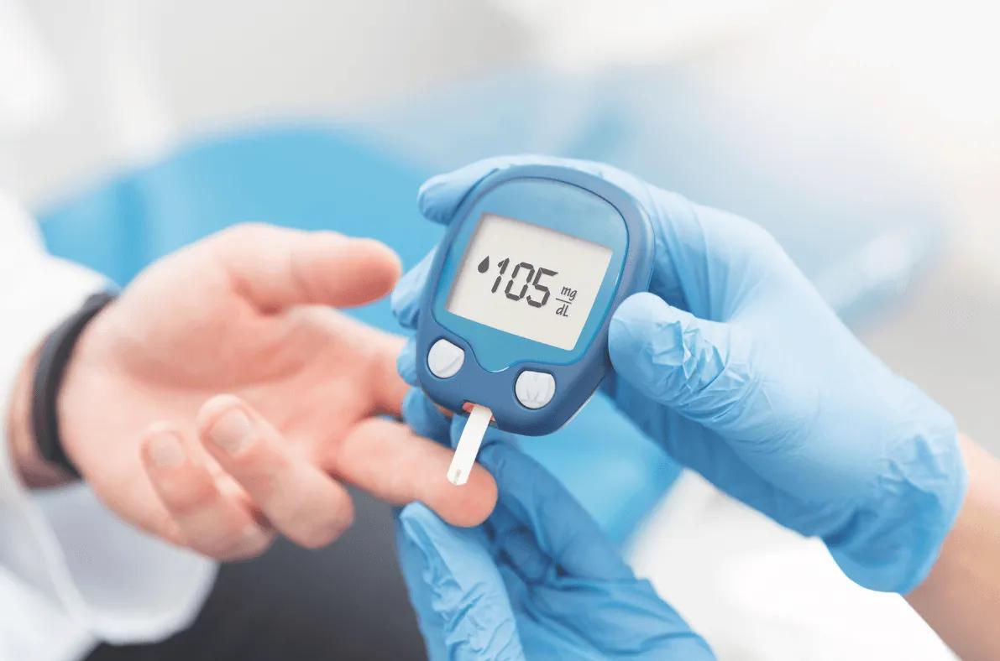

Diabetes
Descripción
La diabetes es una enfermedad que ocurre cuando la glucosa en la sangre, también llamada azúcar en la sangre, es demasiado alta.
Causas
La diabetes tipo 1 ocurre cuando el sistema inmunitario, que combate las infecciones, ataca y destruye las células beta del páncreas que son las que producen la insulina. Por otro lado, la diabtes 2 la forma más común de la enfermedad, es causada por varios factores, entre ellos, el estilo de vida y los genes.
Síntomas
- Aumento de la sed y ganas de orinar
- Aumento del apetito
- Fatiga
- Visión borrosa
- Entumecimiento u hormigueo en las manos o los pies.
Pruebas y exámenes
Glucosa en ayunas, prueba de hemoglobina A1c, Prueba de Tolerancia a la Glucosa Oral y Glucemia capilar.
Tratamiento
En caso de la diabetes tipo 1 se trata con insulina y monitoreo de glucosa y en el caso de la diabetes tipo 2 dieta y ejercicio y medicamentos.
Expectativas
La expectativa de vida de una persona con diabetes es, en promedio, 10 años inferior a la de la población general.